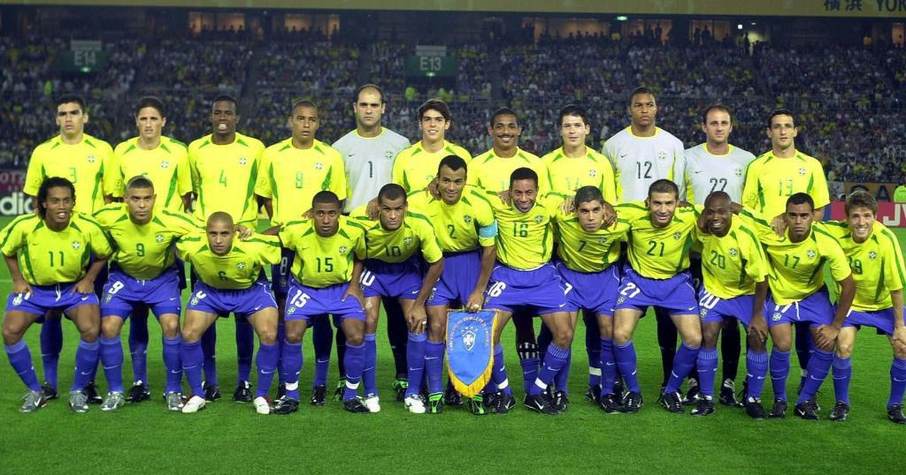

O Brasil foi pentacampeão em cima da alemanha por 2 a 0 para o Brasil
O Brasil foi pentacampeão em cima da alemanha por 2 a 0 para o Brasil O Brasil é o maior campeão da copa do mundo, tendo 5 copas
A ultima copa que o Brasil ganhou foi em 2002 com o seguinte time 
O Brasil foi pentacampeão em cima da alemanha por 2 a 0 para o Brasil
O Brasil foi campeão com 18 gols marcados e apenas 4 gols sofridos tendo o artilheiro da copa daquele ano também
O jogador Ronaldo Nazário foi destaque na copa pois foi o artilheiro dela com 8 gols em 7 jogos nessa copa ele usou a camisa 9
um destaque daquele ano foi a zaga brasileira formada por Lucio e Roque Júnior e o goleiro Marcos